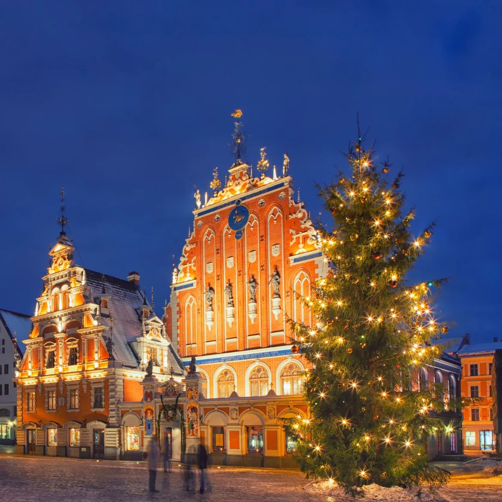

Hjem/Inspirasjon
Reiseinspirasjon
Julemarkeder, vinterlys og byer det er lett å gå seg vill i. Her er det vi selv reiser etter – med tips til hva du bør få med deg.
Reisetema
Julemarkedene
En julemarkedstur i Europa er den korteste veien fra norsk novembermørke til ekte førjulsstemning. Med norsk reiseleder på hele turen trenger du ikke tenke på annet enn å nyte den.
De fleste byene har marked i fire uker før jul, og de beste står i gamlebyen der gatene er smale nok til at lysene henger over hodet på deg. Vi legger turene så du får en hel dag på markedet – ikke en time mellom to museer.
Vil du ha Glühwein, bretzel eller bare se på folk? Det er lov å gjøre ingenting på en julemarkedstur.
- Krakow, Gdansk og de tyske hansabyene.
- Elvecruise langs Rhinen med julefeiring om bord.
- Bussreise til Flensburg og Lübeck over grensen.

Destinasjoner
Fire steder vi reiser tilbake til

Costa Blanca om vinteren
Mild luft, lange strender og fjell som speiler seg i havet.

Norsk natur
Kort vei, ingen flyplasskø – og landskap som ser ut som bilder.

Byer og bakker
Julemarkeder i nord, toskanske byer i sør.

Soloppgang ved kysten
Vi reiser gjerne hit når mørket har vart lenge nok hjemme.

Gaven som gir opplevelser
Gavekort på reise
Gi bort en reise! Våre gavekort er den perfekte gaven til den som fortjener et velfortjent avbrekk eller nye reiseminner.
La mottakeren velge sin egen drømmetur til sol, kultur eller storslått natur. Fleksibelt og trygt.
Vi har skapt gode og varige ferieminner siden 1934!Dag Aasbø Travel